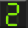
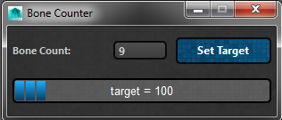

ART_BoneCounter¶
Author: Jeremy Ernst
-
class
Interfaces.ART_BoneCounter.ART_BoneCounter(mainUI)[source]¶ This class builds a simple interface that allows a user to see what the total bone count of their asset will be given the current module settings. It also allows the user to set a bone count target.
- It can be found on the Rig Creator toolbar with this icon:
- 
- The interface looks like this:
- 
-
__init__(mainUI)[source]¶ Instantiates this class, getting the QSettings and calling on the method to build the interface for the tool.
Parameters: mainUI – The instance of the Rig Creator UI from which this class was called. See also
ART_BoneCounter.buildBoneCounterUI
-
buildBoneCounterUI()[source]¶ Builds the interface for the bone counter tool, which is comprised off a QLineEdit that shows the current bone count, a QPushButton to launch another simple UI that allows the user to set a bone count target, and QProgressBar that shows a percentage to target bone count.
See also
ART_BoneCounter.setBoneCountTarget